生肖Chinese Zodiac
The Shēngxiào literally “birth likeness”, is a scheme and systematic plan of future action that relates each year to an animal and its reputed attributes according to a 12-year mathematical cycle and it remains popular in several East Asian countries including China, Vietnam, Korea, Japan, and Thailand.
Dragon

Goat


Rooster
 

Ox